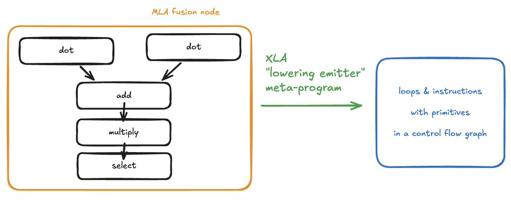
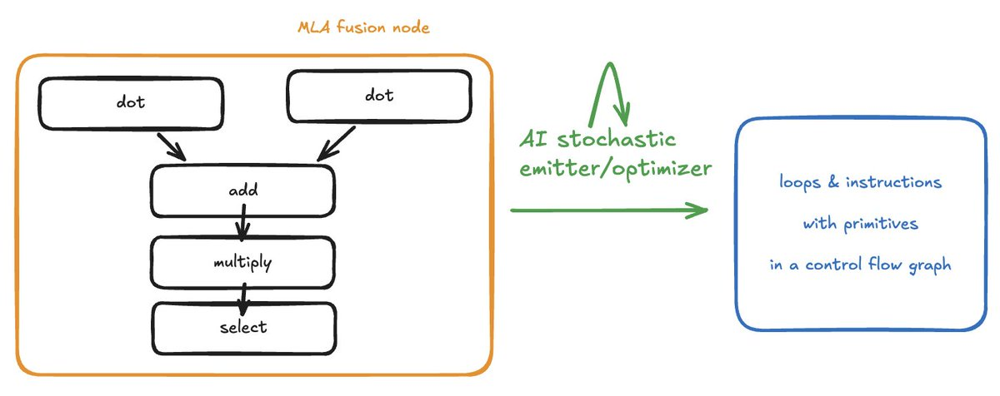

Jalapeño MLA内核在HotChips亮相后，讨论大多在讲这个事实：OpenAI的硬件团队说『AI在写我们的kernel』：关键是，当它写的时候，我们并不真正需要逐行读懂它在做什么。本文作者原就是XLA创始人、在OpenAI做了两年多编译器，他要把背后的问题讲透：这事是怎么可能的。
他的框架是把AI当成随机优化器，编译器则从『数据流规则的优化』走向更接近程序合成的领域。下面是一趟从超优化(Superoptimization)起源讲到MLA内核生成的旅程。
编译器接收程序，吐出程序翻译或改进后的版本。输入输出两侧的程序都有语义，语义告诉我们程序意味着什么、它能做什么、以及如何推理它可能做的事。
做编译器的人把编译器想成纯函数，它吃进一个数据结构，吐出一个应当保有对应语义的数据结构。
有些时候编译器专注在『降级(lowering)』或『翻译』，比如接收C输出x86-64汇编，我们通常认为这是更低层的东西。但在实践中它们往往不只是翻译。更多时候，编译器专注在『优化』：它们接收代表程序的中间表示(IR)，试着产出那个程序的更优版本。有时『更优』意味着跑起来更少周期，有时意味着更少冗余代码，有时是把我们证明过『必然成立』的东西特化进去(部分求值)。
换个角度看LLM的来历：它们本来就是为了把人类文本从一种语言翻译成另一种，翻译自然是看家本领。而日常用LLM也可见它们能写出新方案、改进既有方案。很多写代码的人让LLM『优化这段代码』，它能做得不错(不过我们需要确认它优化得是否正确，这点稍后再谈)。这无非是想说，LLM具备优化编译器应有的那些能力。
优化编译器自然是在试着按某个目标(通常是执行时间)提高所处理程序的最优性。这在任意程序的通用场景下难得惊人，以至于存在一条『编译器工程师的充分就业定理(full employment theorem)』(作者是当上编译器工程师之后才发现的，但它仍让人安心)。
『超优化器(Superoptimizers)』是优化编译器下一个迷人的小子领域。给定一个程序，我们能借语义说明它的行为，那么拥有同样语义的最优程序是什么？超优化器想解决的就是这个问题，本质上是个搜索问题。
设想我在找具有相同语义的最短程序，而且有能力问某个候选程序是否语义等价。我可以假设性地按目标次序枚举每一个程序，挑出语义相同里最小的那个。
不过按目标顺序枚举所有程序听起来相当不可行。作者最爱的一篇学术论文、2013年的《STOKE: Stochastic Superoptimization(随机超优化)》反问道：如果我们只是反复随机地改动程序，最终会否看到最优程序？他们提出靠随机游走(配合机器学习的元老马尔可夫链蒙特卡洛 / Metropolis-Hastings)，最终能看到那个最优程序。
蒙特卡洛式的改动通常很笨(只是随机挑一个策略)，但很快。LLM很聪明(有大量推理token)，但相对慢。
那么，与其用又笨又快的蒙特卡洛改动，何不让LLM去判断该把程序带向哪个方向？我们将得到一个非常聪明的随机优化器，把程序在优化的程序空间里渐进推进。
退一步看。想想你认识的那位最能把『把代码性能榨到极致』体现到极致的人，姑且称他『优化匠Ollie』。Ollie大概率对哪类代码改动可能有收获有直觉。他会试些东西看能不能成，不成就回滚再去试别的。但他对哪些事情是可能的、以及如何可能击败编译器有一份直觉。
Ollie的这些直觉常常超出经典编译器的能力。尽管现代优化编译器结果相当出色，它们建立在相当简单的规则与启发式之上，说白了是『把局部数据流变换迭代跑到不动点』这个思路。我们还会对考量做相位排序(phase ordering)：构造编译流水线时先考虑A再考虑B，而不是处理复合的AB问题。调度器与寄存器分配器是臭名昭著的例子，有大量博士论文尝试去啃『调度-分配协同』这个复合问题(为了获得合并相位排序的好处)，但实践中一直难以奏效。
这正是Ollie专长的价值。他常常知道如何用针对当下情境的专门启发式去权衡几个NP完全问题，因此有更多量身定制的情境感知与敏感性。他还能动用那些优化编译器未必能有效运用的技巧，尤其是组合使用：如外提(outlining)、定制ABI、为了向量化做的变换，以及那一堆让人嘀咕『编译器要是能直接这么做就好了』的杂活。
现在试想，AI凭借它无论怎样的推理能力，可以扮演迷你Ollie。它未必有Ollie那般对未来终局的准确直觉，但它对什么可能有效有一点嗅觉，而且它能投很多很多的球。
这套做法和STOKE不太一样的一点是：我们无法保证时间趋于无穷时必然看到最优程序；但因为AI拥有更接近人类的推理能力，它在单位时间里能获得可观的人味进展。
先说清楚：作者并不知道AI为他们的Jalapeño MLA内核吐出的底层代码是什么，但他知道怎么用numpy打出MLA。
在作者曾参与的XLA编译器中，会把一批numpy运算融合成团块，再用一个叫『发射器(emitter)』的元程序把它降级成循环、指令与更低层的原语。当XLA / 发射器那么做的时候，作者并不需要在意后端吐出的汇编是什么。
对我们的随机优化器而言，AI概念上取代了那个emitter元程序：它既做降级又做优化，而我们还能请它再一路优化到贴近roofline(算力峰值)。

希望这讲清了AI的位置，以及它如何类比已有优化编译器系统里的一个组件。还有个有用的想法：我们现在视为『汇编代码』的一层在往上移。你敲普通C++ 用 -O3编译时，不会指望理解吐出的汇编，即便你完全懂敲进去的C++。这里做的是同类的事，只是输入规范更高层、更数学化。
于是一个关键问题浮现：我们如何检查AI给出的程序确实与那份更高层的描述 / numpy等价？这个检查机制确立了AI随机优化过程的可靠性(soundness)。作者预期将来有篇博客详细展开，但现在只需说：语义等价性测试是可行的，而且我们确实在做。加速器程序尤其适合强而完整的契约：它们大体上相当数学化、以数据流为导向，能够验证『契约与我AI优化后的程序行为完全一致』。
可补充的是，该领域很多相关技术由程序合成(program synthesis)这个子方向开创。优化编译器说『这有个带语义的程序，请在不改语义的前提下把它变好』；程序合成则说『我相信存在一个带这些语义的程序，请尽力找到你能找到的最优的那一个』。程序合成是比优化编译更难的题，但它受的束缚也更少。当人类里的Ollie做得比优化编译器更好时，它们做的本质上就是程序合成；而这是AI现在能帮我们自动化的一件事。AI可以从原始程序里汲取灵感，但不必只对它做些轻微局部变换。经典优化编译器看到『哦你写了个冒泡排序』不会(靠理解契约)换成快排，但Ollie和AI都能做到。这让我们更处在『随机优化的程序合成』区间，而非经典优化编译器区间。
把这些拼起来：你可以从一个『离numpy不远』的东西出发，等48小时，得到一份语义相同的已优化内核，这正是我们在HotChips演讲里展示的：

演讲里的幻灯片还指出，在他们的机器上，AI往往能在我们觉得已经调得相当顺手的内核上也把性能顶到超过人类专家。这常因为仍有可观的可达成百分比的提升空间，只是源于需要探索的大量种种组合与排列，而这些组合对一位人肉性能工程师来说往往难以忍受地繁琐。
剥到内核，编译器终究只是一个函数。我们把程序交给它，拿回一个更好版本的程序，输入输出之间期望保有相同语义。
经典优化编译器靠数据流规则与启发式让程序变好，它们的源头完全可解释，但能做的动作也更容易受限。
相比之下，AI作为随机优化器，只需要『认真想』然后吐出结果。它的动作没那么多根本性限制，因此更接近我们的人类专家优化者。我们确实需要某种方式去核实它吐出的程序是可靠的、实现的是我们送入的相同语义，而且这套机制我们已经就位。这种AI优化特别适合数学运算那种契约很强的场景：契约让你不必逐行读懂这个内核在做什么。
这就是我们拿到AI生成的MLA内核的方式。
参考：https://x.com/cdleary/status/2094878051238887834